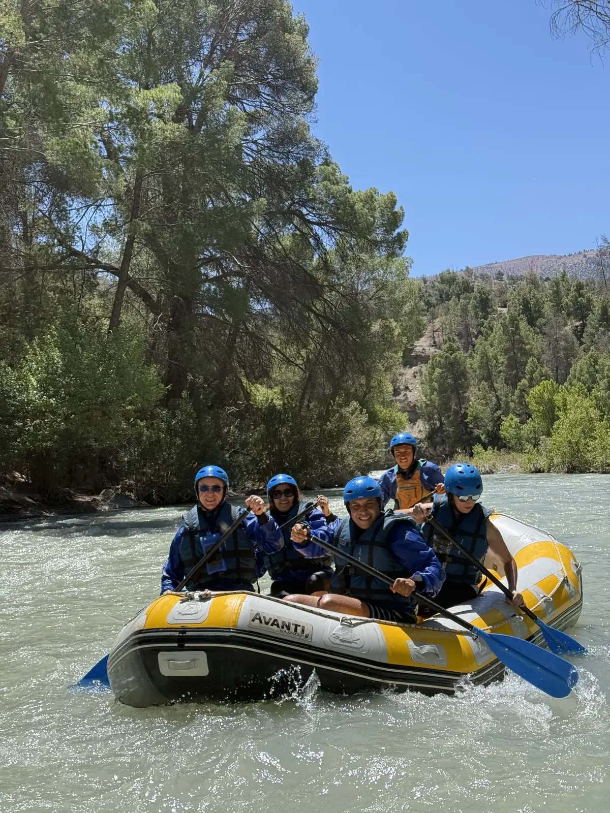
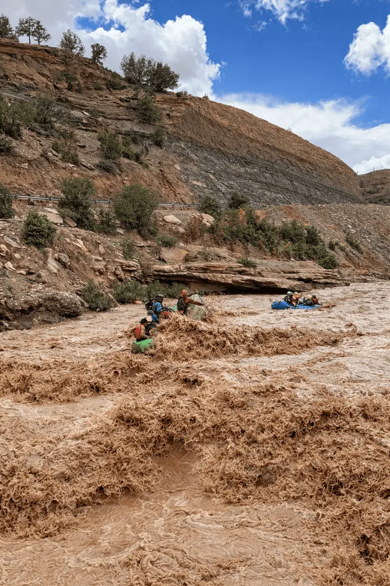

Rafting
Trips on the Oued Ahansal according to the season and river conditions.

Authentic experiences in the heart of Imsfrane, guided by people who live in and know this part of the Atlas Mountains.
We are a local team based in Imsfrane, in the commune of Tilouguite, Azilal Province. Our knowledge of the mountains, rivers, trails and villages helps us introduce visitors to the region in an authentic way that stays close to local life.
Through Imsfrane Cathédrale, we welcome travellers who want to explore the landscapes of the High Atlas and enjoy outdoor adventures in good conditions.

Trips on the Oued Ahansal according to the season and river conditions.
Imsfrane summit, gorges, waterfalls and local routes.
Bivouacs and nights in nature to extend the adventure.
Nature routes around Imsfrane and Tilouguite.
A local base where you can rest and organise your stay.
We can combine activities, accommodation and transport around your plans.

Send us your dates, group size and the activities you are interested in. We will help you prepare your stay.